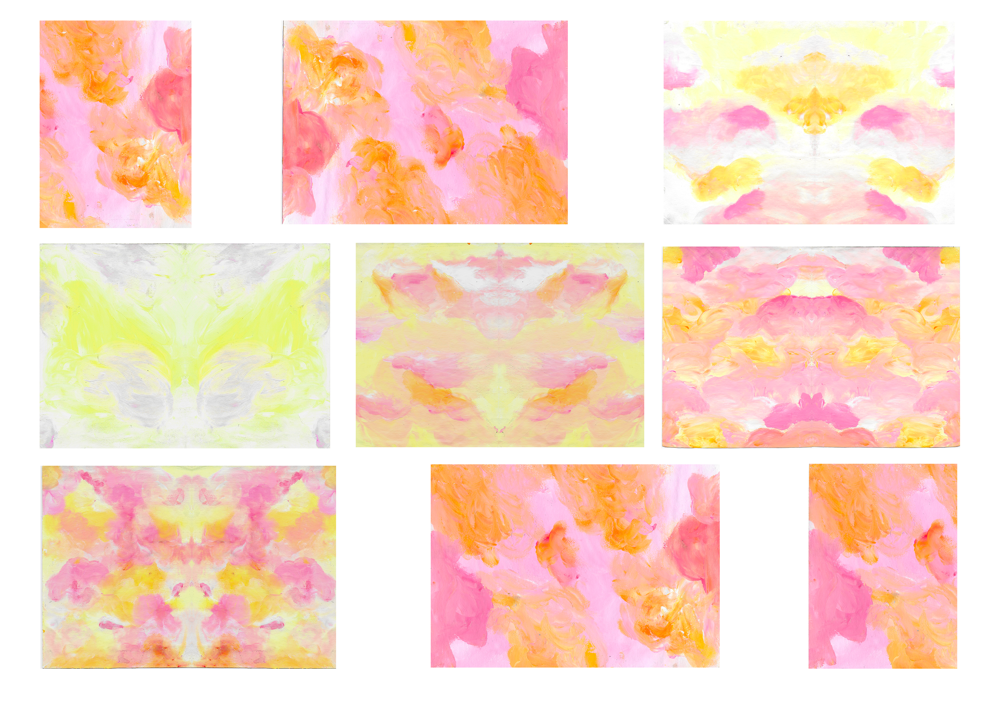
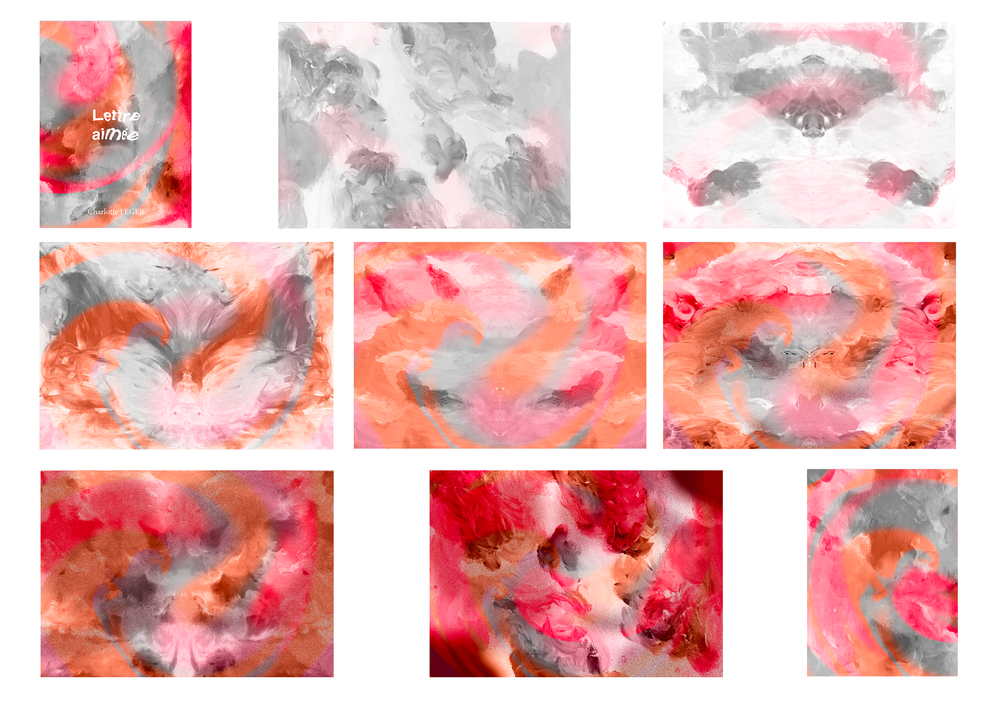

LETTRE AIMÉE
Objet éditorial
Contexte : Livret de poème
Lieu : L'Initiative, Paris 19e
Ce livret est un projet global dont j’ai conçu l'intégralité du contenu, de l’écriture des poèmes à la réalisation visuelle. Le récit explore le sentiment amoureux à travers des dialogues métaphoriques entre des éléments naturels. La direction artistique du projet suit une progression narrative : l’ouvrage débute par des visuels épurés aux nuances douces de blanc, de gris et de rose léger pour évoquer l'amour naissant. Au fil de la lecture, l'esthétique évolue vers des compositions de plus en plus saturées et perturbées par un grain marqué, traduisant graphiquement la déchirure des relations décrite dans les poèmes. Ce travail illustre ma capacité à lier le fond et la forme en utilisant le traitement de l'image comme un prolongement direct du texte.
La conception de ce livret a débuté par une phase de crayonné, me permettant de structurer la narration visuelle et l'évolution de la mise en page. Pour obtenir le rendu sensible des poèmes, j'ai choisi une approche tactile en peignant directement au doigt sur papier. Cette technique a permis de créer des mélanges de couleurs fluides et des textures organiques. Après avoir numérisé ces compositions, j'ai affiné les transitions chromatiques et accentuer progressivement le grain.




